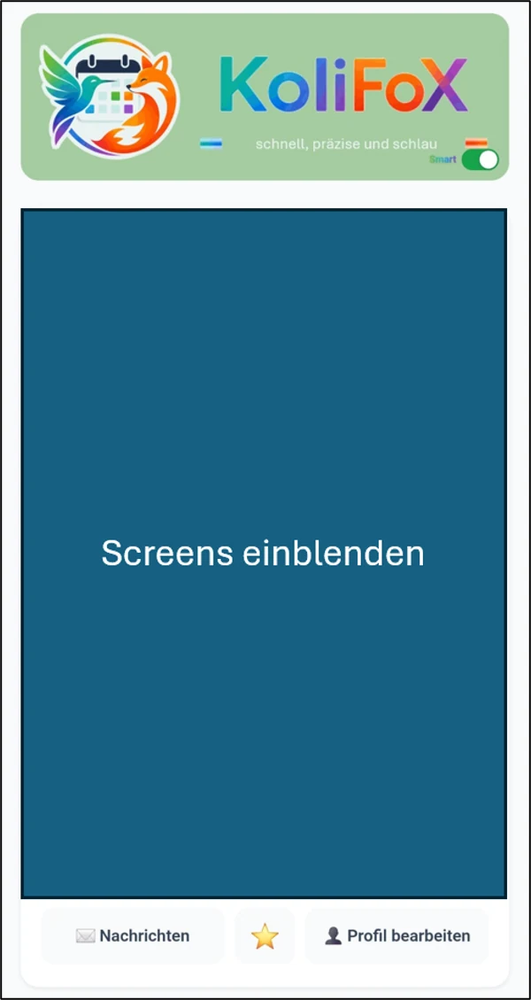
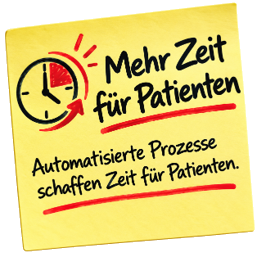

KI-gestützte Fachbereichs-Auswahl
Du beschreibst deine Beschwerden in eigenen Worten. KoliFoX schlägt die passende Fachrichtung vor — damit du nicht beim falschen Facharzt landest.
KI-gestütztschnell, präzise und schlau
KoliFoX findet die passende Fachrichtung zu deinen Beschwerden, zeigt Praxen und Apotheken in deiner Nähe und stellt dringende Anfragen direkt an eine Praxis — oder an alle Praxen einer Fachrichtung in deiner Region.
Kostenlos für Patienten · Ohne Installation im Browser · Server in der EU

56 Fachrichtungen — von Allgemeinmedizin bis Zahnmedizin
Alles in einer Anwendung, ohne Wechsel zwischen Portalen — und ohne Anruf in der Praxis.
Du beschreibst deine Beschwerden in eigenen Worten. KoliFoX schlägt die passende Fachrichtung vor — damit du nicht beim falschen Facharzt landest.
KI-gestütztPraxen in deiner Umgebung, nach Entfernung sortiert. Mit deinem Standort findest du auch unterwegs und im Urlaub eine Praxis der richtigen Fachrichtung.
StandortbezogenÜber 17.000 Apotheken in Deutschland, ebenfalls nach Entfernung sortiert — mit Adresse und Telefonnummer.
StandortbezogenDu brauchst heute einen Termin? Schildere dein Anliegen einmal — die Praxis entscheidet und meldet sich. Kein Warten in der Telefonschleife.
Am selben TagKrankschreibung nötig, aber kein Termin frei? Stell die AU-Anfrage direkt aus der App — mit allen Angaben, die die Praxis dafür braucht.
Ohne Anruf AU-Schein? Du benötigst eine Arbeitsunfähigkeitsbescheinigung? Ausstellen kann sie nur deine Praxis. KoliFoX bringt deine Anfrage dorthin — ohne Telefonschleife.Du hast einen Überweisungsschein? Fotografiere ihn ab und sende ihn an eine Praxis der überwiesenen Fachrichtung — ohne Umweg.
In VorbereitungAlle Anfragen gehen verschlüsselt an die Praxen, werden auf Servern in der EU verarbeitet und danach automatisch gelöscht.
Server in der EUJede Anfrage wird vollständig protokolliert und ist als PDF abrufbar: wann du angefragt hast, was die Praxis geantwortet hat, was vereinbart wurde.
Für deine UnterlagenKoliFoX ist kein Ort für deine Krankengeschichte. Wir verarbeiten nur, was für die konkrete Anfrage nötig ist — und löschen es danach.
Betrieb und Datenhaltung innerhalb der Europäischen Union.
Angaben zu dringenden Anfragen werden nach kurzer Frist automatisch gelöscht, nicht auf Vorrat gespeichert.
KoliFoX verwaltet Termine und Anfragen — keine Diagnosen, keine Befunde.
Wer was wann erhalten hat, steht in deinem Protokoll.
Konto anlegen, Praxis speichern, fertig. Ab dann siehst du deine Termine und kannst Anfragen stellen — im Browser oder als App auf dem Handy.
schnell, präzise und schlau
Dringende Anfragen und AU-Wünsche kommen schriftlich und vollständig herein — statt dreimal zu klingeln. Ihr Team entscheidet, was wann bearbeitet wird. Ohne neue Praxissoftware, ohne Installation.
Läuft im Browser · Rollen für Sekretariat, Ärzte und Labor · Server in der EU
Seit gestern Abend starke Schmerzen, Wange geschwollen. Heute erreichbar ab 9 Uhr.
Erkältung seit Montag, bittet um Krankschreibung bis Freitag.
Darstellung nachgebildet — echte Ansicht im Praxis-Cockpit
Für jede Fachrichtung — mit eigenen Rückfragen je Fachbereich
Vier Dinge, die Ihr Team sofort merkt.

Die folgenden Punkte sind mein Vorschlag auf Basis dessen, was das Praxis-Cockpit heute kann — wir gehen sie gemeinsam durch.
Anfragen erreichen Sie schriftlich und vorqualifiziert. Sie legen fest, wie viele Sie pro Tag annehmen — ist das Fenster voll, wird automatisch abgelehnt.
Kapazität im GriffÖffnungszeiten, Urlaub, Rufbereitschaft: Was Sie hinterlegen, gilt. Außerhalb Ihrer Zeiten nimmt KoliFoX keine Anfragen an.
Kein NachtdienstNeue Anfragen melden sich per Push oder E-Mail — niemand muss den Bildschirm im Auge behalten.
Push & E-MailMehrere Praxen einer Fachrichtung und Region teilen sich das Anfrage-Aufkommen. Wer zuerst zusagt, übernimmt — die anderen sind entlastet.
RegionalPatienten checken selbst ein und sehen ihre Position. Ihr Team verteilt auf Sprechzimmer, ruft auf und leitet weiter — ohne Zettel.
Im HausJede Anfrage, jede Zusage, jede Weiterleitung steht mit Zeitstempel im Protokoll — als PDF für Ihre Unterlagen.
NachvollziehbarNoch zu besprechen: Reihenfolge und Gewichtung dieser Punkte, ob wir Aufnahme-Dokumente, Labor-Rolle und Fachbereichs-Rückfragen eigene Karten geben, und welche Aussage ganz oben steht.
Kein Vertriebstermin nötig, kein Wechsel Ihrer Praxissoftware.
Sie füllen das Antragsformular aus: Praxisdaten, Fachrichtung, Öffnungszeiten.
Wir prüfen die Angaben und schalten Ihr Praxis-Konto frei. Anmeldung mit Zwei-Faktor-Schutz.
Räume und Zeiten eintragen, Team einladen — ab dann erreichen Sie Anfragen schriftlich im Cockpit.
KoliFoX ist fertig entwickelt und läuft. Für die erste Praxisgruppe nehmen wir uns Zeit für Einrichtung und Schulung.